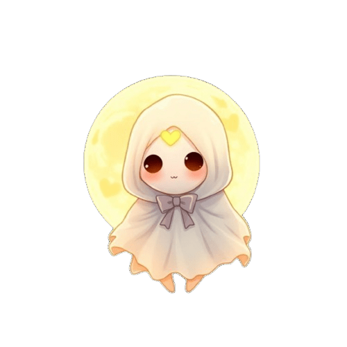

<<<<<<< Updated upstream:index.html
Drop de Fantasmas AR
=======
Soul Hunter
>>>>>>> Stashed changes:templates/index.html
Soul Hunter
<<<<<<< Updated upstream:index.html
Fantasma Capturado
X
Testar Fantasma Lendário!
=======
Capturar Fantasma
>>>>>>> Stashed changes:templates/index.html
Pontos:
0
<<<<<<< Updated upstream:index.html

=======
>>>>>>> Stashed changes:templates/index.html